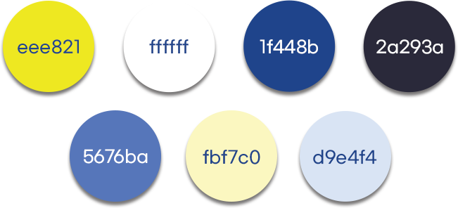

과즙이 풍부한 신선한 재료들만 선별해 과일자체의 자연의 맛을 내기 위해 노력합니다.
그 결과, 우리 브랜드는 100% 천연 과즙으로 만들어진 다양한 맛의 탄산음료를 고객들에게 선보일 수 있었습니다.

브랜드의 이미지가 한눈에 보이는 G 에는
캔 뚜껑과 캔링을 기하학적인
모양으로 형상화하여, 탄산을 마시는 모습을
형상화시켰습니다.
C A N 에는 캔 뚜껑과 캔링을
기하학적인 모양으로 형상화 시켜,
각 위치를 바꿔서 C A N 이라는 글자가
만들어 지게 하였습니다.
